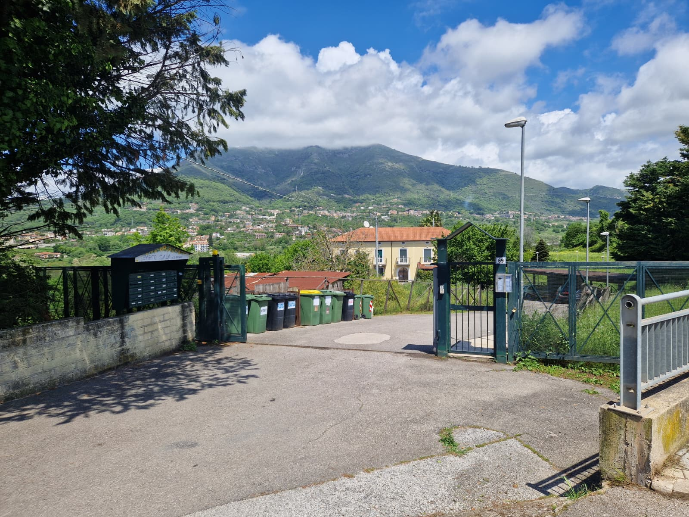

Istruzioni
Check-in anticipato e check-out tardivo sono disponibili solo su richiesta, salvo disponibilita, e prevedono un costo aggiuntivo.

Check-in
- Al vostro arrivo ci incontreremo davanti al cancello della struttura.
- Vi chiediamo gentilmente di comunicarci in anticipo l'orario di arrivo previsto.
- È importante inviarci un messaggio circa 30 minuti prima del vostro arrivo, così potremo organizzarci per accogliervi al meglio.
- Al check-in verranno richiesti i documenti di identità di tutti gli ospiti, inclusi i bambini.
- Al check-in dovrà essere pagata la tassa di soggiorno: 3 euro a persona al giorno, esclusi i bambini sotto gli 11 anni.
- Per le prenotazioni effettuate tramite Booking verrà richiesto un deposito cauzionale di 100 euro. Il deposito verrà restituito tramite bonifico bancario entro 48 ore dal check-out, dopo il controllo dell'alloggio.
-
I pagamenti possono essere effettuati tramite bonifico immediato,
PayPal o contanti.
Non abbiamo il POS.
Check-out
- Il check-out deve essere effettuato entro le ore 10:00 e non oltre, salvo diversi accordi presi in anticipo.
- Prima di lasciare la casa, vi chiediamo di controllare che siano spenti luci, rubinetti, condizionatore e termosifoni.
- Se possibile, vi chiediamo di mettere gli asciugamani usati nella lavatrice, senza avviarla.
- È molto importante buttare la spazzatura prima della partenza.
- Le chiavi vanno lasciate nella cassetta delle lettere appena fuori dal cancello principale condominiale, sulla sinistra, nella cassetta con scritto “A Casa di Marco”.
- Dopo aver lasciato le chiavi, vi chiediamo gentilmente di inviarci un messaggio per confermare l'avvenuto check-out.